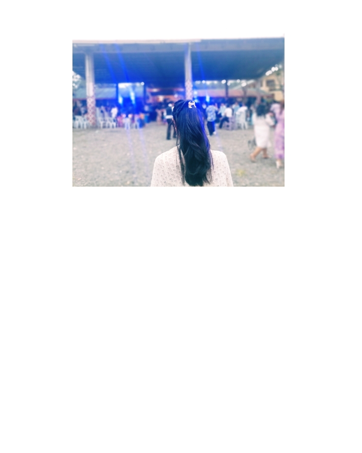

Write your title here.
This is your poem, journal,
or message.
Everything written here can
be edited directly inside
index.html.


I saw the moonlight peeking through the window tonight — asking for me to follow its path, perhaps. I have been inhabiting a coffin lately — light barely reaches me, and I no longer truly seek it. I've become a ghost residing in the darkness. There's a strange kind of solace in there — the kind that cradles me even as it drains me, yet I find myself wanting to stay, even after knowing it's hollowing me out, breath by breath.